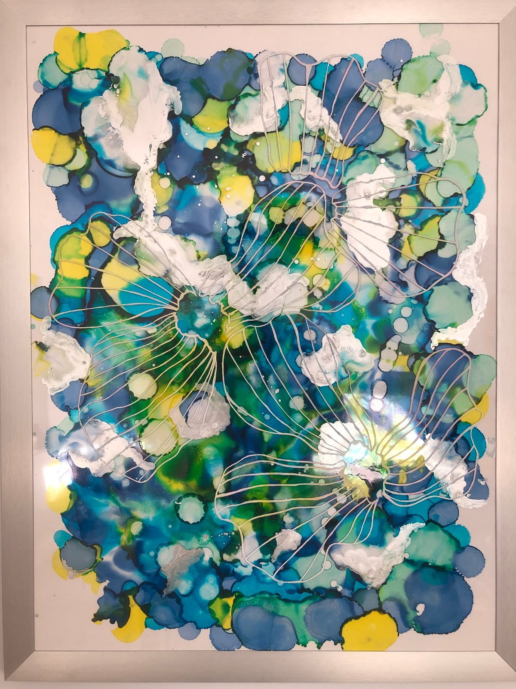
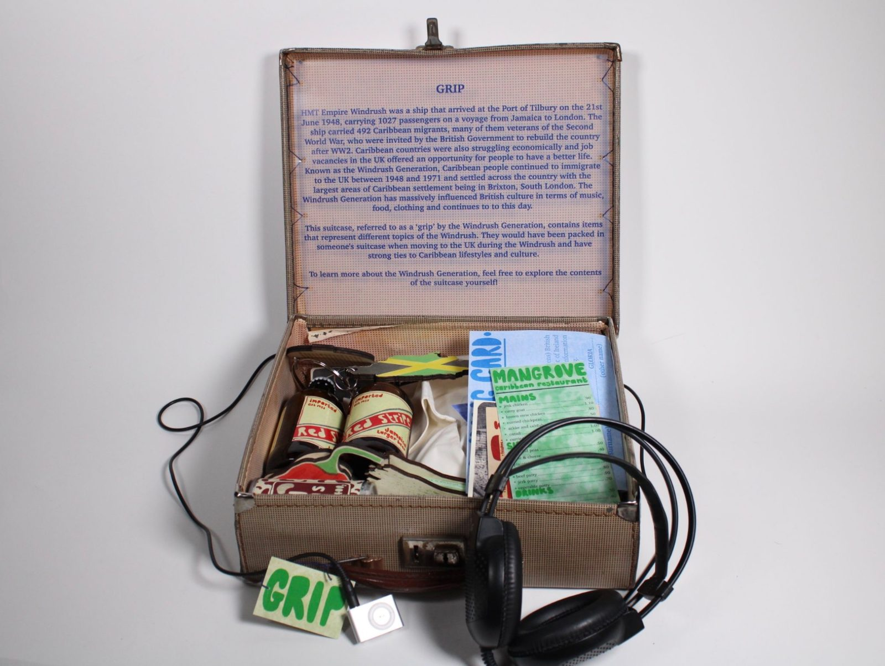
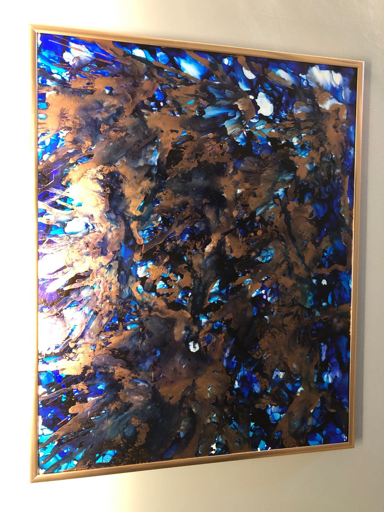
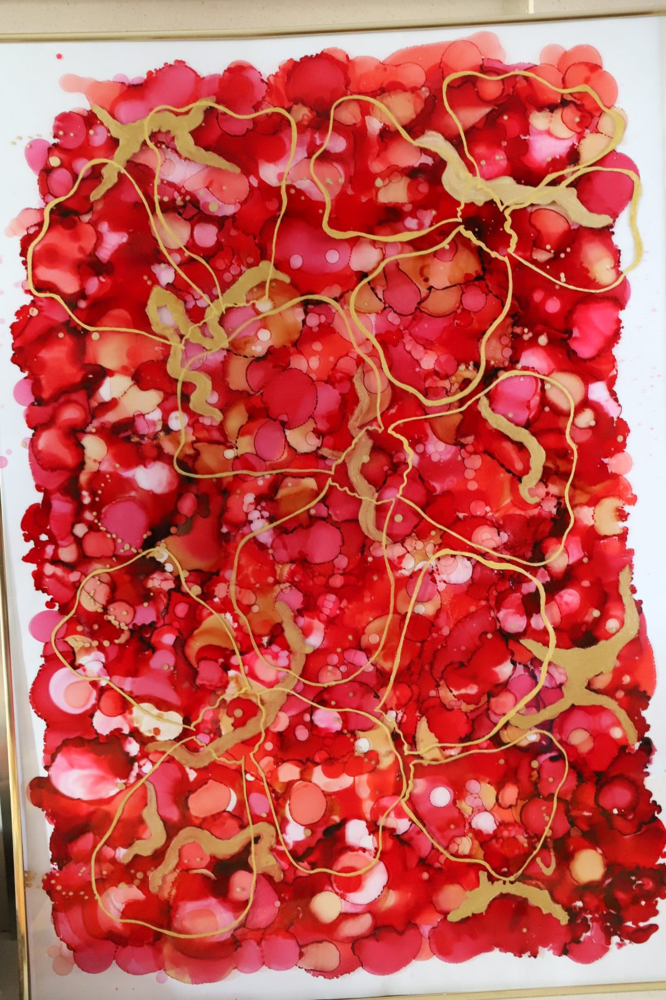

I work in ink — poured, printed and bound.
I’m Ellie Carpenter, a painter and graphic designer. I make alcohol ink paintings, and I design objects that teach — from framed abstracts to a suitcase you are invited to unpack.



Selected work
Paintings
Ink poured onto a surface that refuses to absorb it, left to bloom into cells and tidelines no brush could draw, then worked back over with metallic line and opaque white.
Framed originals and smaller studies — abstracts, jellyfish, roses and poppies, and one piece assembled from dozens of cut panels that interlock into a single image.

Grip
An interactive educational body of work exploring the experiences of the Windrush Generation. Everything is held inside a vintage suitcase — a ‘grip’, as Caribbean people called them — and visitors are invited to open it and handle the contents themselves.
Inside are two hand-bound books built from Phillips family photographs and the 1971 words of my great-grandfather, R.E.K. Phillips, alongside laser-engraved objects that carry the research.
From the books inside Grip“I do not understand West Indians who turn their back on their roots”

About
Two ways of working, and the same material underneath.
I paint in alcohol ink — poured, pushed and left to find its own edges before I draw back into it. It is the half of my practice where I am not entirely in charge, and that is the point.
The other half is design. I graduated from Leeds Arts University in 2024 with a degree in graphic design and visual communication, and my design work is print-led and hands-on: I like the point where research stops being a document and becomes an object — a book you can open, a tag you can turn over, a suitcase you are allowed to unpack.
Grip, my final major project, taught me most of what I now care about as a designer: that storytelling and inclusive design belong together, and that history lands differently when someone can hold it in their hands.
New paintings and work in progress go up on Instagram as @_printsbyel.
- Education
- BA Graphic Design, Leeds Arts University — 2024
- Practice
- Alcohol ink painting, print, bookbinding, typography, object & exhibition design
- Interests
- Inclusive design, heritage & archives, storytelling, design for good
Contact
Let’s make something worth keeping.
I’m open to studio roles, freelance projects and collaborations — particularly work with a heritage, education or community brief. The quickest way to reach me is LinkedIn.